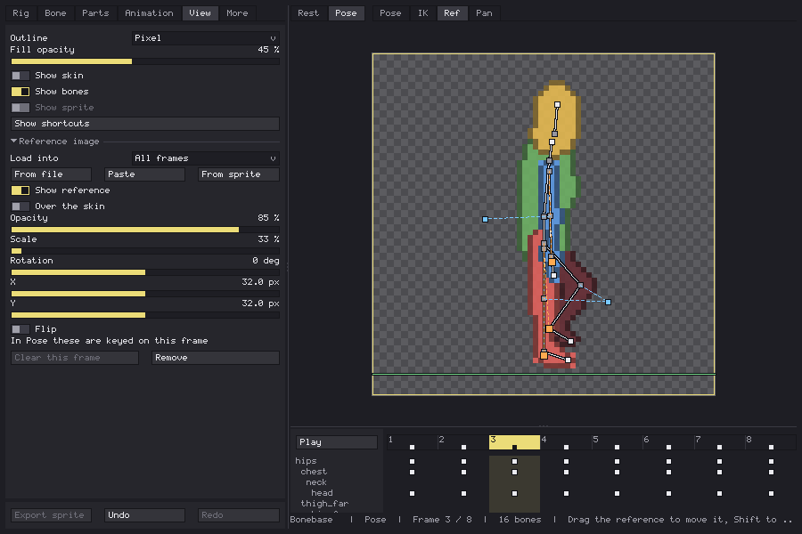
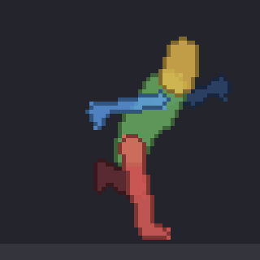
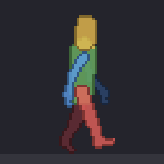

Bonebase 1.0 is out. You can build a skeleton, give it a skin, animate it with live IK, clips and a dope sheet, and export it to Aseprite as one layer per part to draw over.
I want to keep it moving, so the plan is one update or devlog a week. This is the order, nearest first. Only the first one has a date.
Next week: reference images (1.1)

Load a drawing, a photo or another sprite under the rig, and build or pose the skeleton on top of it.
- From a file, from the clipboard, or from any sprite you have open, at any of its frames.
- One reference for the whole clip, with keys for position, scale, rotation, opacity and flip. Useful when your sketch is not where the rig is.
- Or a different picture on single frames: put your key pose drawings on their frames and match the rig to each one.
- Drawn under the skin, or over it to trace. Saved in the sprite with the rig, never exported.
After that: an animation library

Ready-made cycles you drop on a rig and then adjust with the usual tools. To see how far Bonebase goes, I made a walk and a sprint with it, 8 and 10 frames, with IK on the legs and arms. Those two are where the library starts.

Planned: your own rig library
Save your rigs, each one with its animations, and open them in any sprite. Export them and carry them between projects, instead of rebuilding the same skeleton every time.
Planned: rigs from a silhouette
Start from the outline of a drawing and get a rig that fits it. This one is still an idea; I will write about it when I know how it should work.
If one of these matters more to you than the rest, or something you need is missing, leave a comment. The order can change.